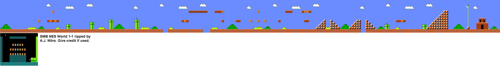

I have had a good start on the creation of my game. Mapping out the level took longer than I had expected but I have finally finished it. I found an image of the whole level (below) which proved extremely useful. I overlaid the image with a grid to make tile calculations easier. I have made some changes to the character logic, namely the switching of the image based on what direction the character is moving in and top collision so that the character doesn't jump through obstacles. Since the level has holes in it, the game used to crash when the player fell into the wholes because it would try to render tiles which didnt exist. I've remedied this by catching when the player is almost off the screen and resetting the character to the start position. It proved problematic to have the game work in javascript mode (on the web) at first but I was eventually able to get it to work (though it takes a few seconds to load). At the minimum I want to add some enemies to the level and add some sound effects as well as menus and score tracking. If I ahve time beyond that I'd like to implement coins and magic mushrooms and maybe another level and a high score system.
Here is the iamge without the grid:
And here it is with the grid:
Here are the parts I have implemented so far:
Here is the work in progress (takes a few seconds to load):